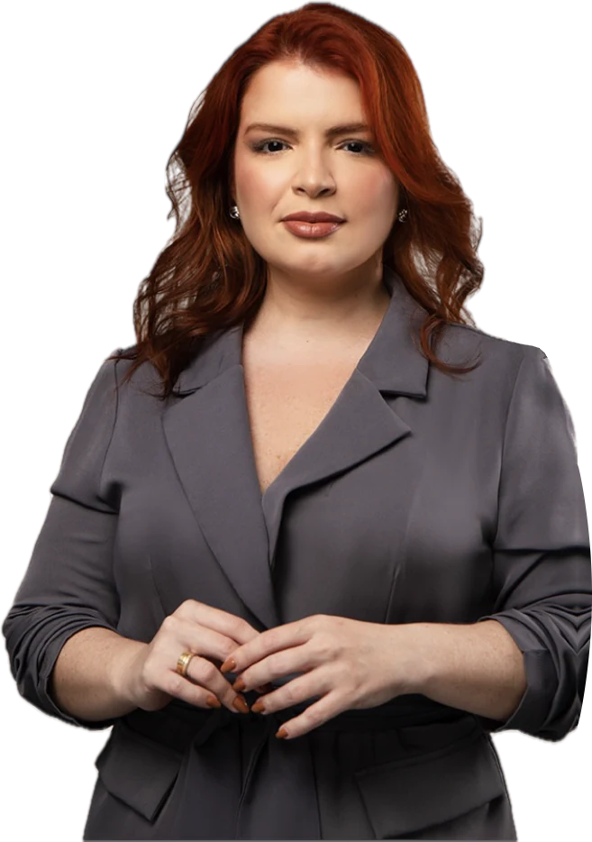
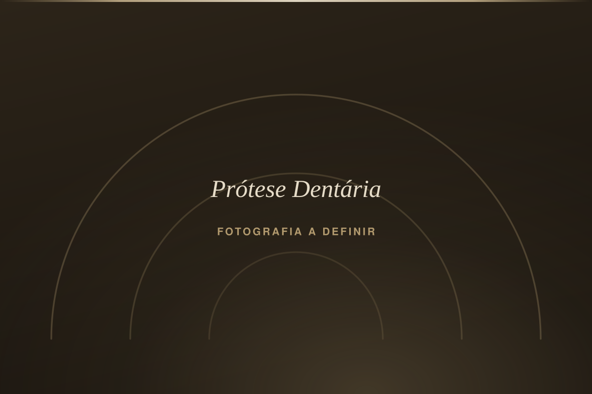
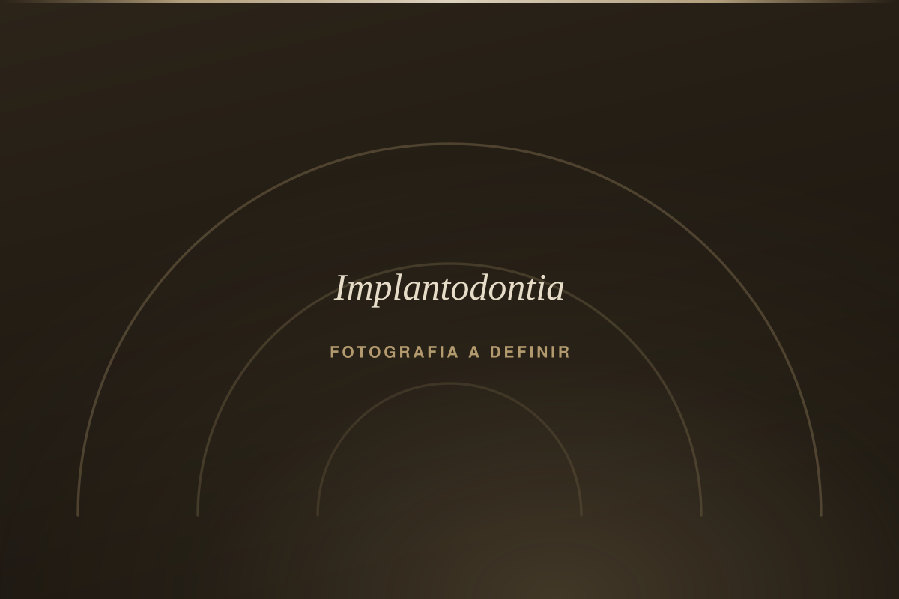
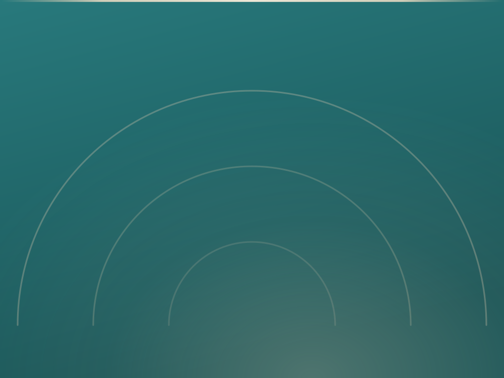
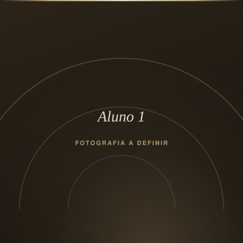
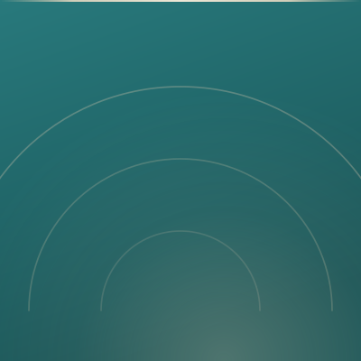
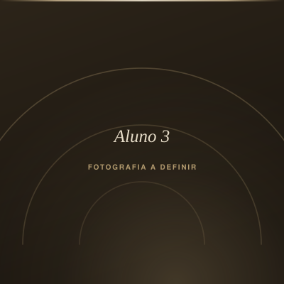

Harmonização Orofacial
Pós-graduaçãoO programa mais procurado do Instituto. Protocolos faciais com prática supervisionada desde os primeiros módulos.
Saiba mais
Aprenda com professores reconhecidos, estrutura premium e ensino voltado para a prática clínica.
Champs Mall · Península · São Luís – MA

Saiba mais sobre o Instituto“Acreditamos que uma formação de excelência vai muito além de transmitir conhecimento. Está na experiência, na troca e na segurança que cada profissional desenvolve ao longo da sua jornada.”
O programa mais procurado do Instituto. Protocolos faciais com prática supervisionada desde os primeiros módulos.
Saiba mais

Diagnóstico, planejamento e mecânica, com documentação ortodôntica trabalhada caso a caso.
Saiba mais

Da seleção de material à estratificação cerâmica, com bancada e laboratório à disposição.
Saiba mais

Cirurgia guiada, reabilitação e manejo de complicações, com prática desde o planejamento.
Saiba mais

Estratificação, cor e forma. O aperfeiçoamento para quem quer elevar o acabamento do dia a dia.
Saiba mais
1 / 3




“Entrei achando que ia rever teoria e saí com protocolo na mão. Na segunda-feira seguinte eu já estava aplicando no consultório.”

Nome do alunoHarmonização Orofacial · exemplo
“A turma pequena muda tudo. O professor conhece o seu caso, e a correção vem no detalhe que você não tinha visto.”

Nome do alunoOrtodontia · exemplo
“Não precisei me mudar para São Paulo para estudar com gente desse nível. Para quem tem consultório aberto, isso é decisivo.”

Nome do alunoImplantodontia · exemplo
“O laboratório aberto foi o que fez diferença. Repetir a estratificação até acertar a cor é uma coisa que curso teórico não entrega.”
1 / 4